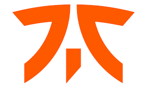
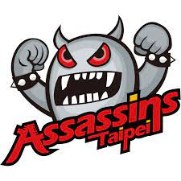
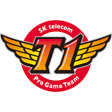
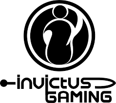
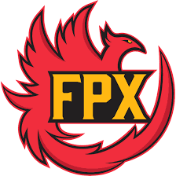
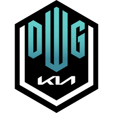

Enrique Cedeño Martínez mayor conocido como Xpeke es uno de los jugadores mas memorables y mas conocidos en la historia del lol, por haber creado una de las jugadas mas insanas del juego el famosos "backdoor de xpeke" donde basicamente les tira la base escapandose de sus rivales
Lee Sang-hyeok conocido como Faker el "Rey Demonio" uno de los mejores jugadores del lol en todo su tiempo fue el unico que con su equipo Skt t1 ganaro el mundial 3 veces cosa que ningun equipo pudo hacer.Su habilidad es increible el manejo del mapa fue el primero en inovar el lol y crear tacticas que nadie hacia despues de esto cambio el juego por completo
Rasmus Borregaard Winther conocido como Caps "Baby Faker" fue conocido por ser un gran jugador y llevar a la cima a su equipo G2, su gran juego llevo a ser comparado con Faker, tambien llego a las finales 2 veces y gano 6 titulos europeos
2011 Para este año los campeones fueron los europeos de Fnatic, tras derrotar en la final a sus colegas de Against All Authority por marcador de 2-1 en la ciudad de Jonkoping en Suecia. Así fue la final completa:
2012 La sede de la final fueron Los Ángeles en Estados Unidos. Para este año los ganadores fueron los taiwaneses del equipo Taipei Assassins luego de imponerse 3-1 a los coreanos de Azubu Frost. Revive los momentos más épicos de esta tremenda final donde arrancó la era asiática en el Worlds:
2013 Los coreanos de SK Telekom T1 impusieron condiciones en ese año (3-1) sobre los chinos de Royal Club en una final que repitió sede en Los Ángeles. Un momento inolvidable porque la figura del gran Faker aparecería en la escena mundial de League of Legends.
2014 En una final disputada en Seúl, Corea del Sur, los locales de Samsung Galaxy White fueron quienes gritaron campeón, tras vencer en la final a los Star Horn Royal Club de China por marcador de 3-1. Así se vivió esta tremenda final que contó con la participación de los Imagine Dragons:
2015 Segundo título mundial de League of Legends para el equipo de SK Telekom T1, después de vencer en Berlín, Alemania a los surcoreanos de KOO Tigers. La figura del gran Faker siguió consolidándose no solo como jugador sino convirtiendo al SKT en el primer equipo en ganar dos veces la ‘Copa del invocador’.
2016 Esta final en Los Ángeles coronó por tercera vez en la historia al equipo coreano de SK Telekom T1, quienes vencieron a sus compatriotas de Samsung Galaxy (Corea del Sur) 3-2 en un duelo a 5 partidas que resultó muy entretenido para una multitud de aficionados que acompañaron el encuentro en Estados Unidos.
2017 Fue el fin de una era y la revancha del año anterior para el equipo de Samsung Galaxy que se coronó como campeón del Worlds en Pekín, China al derrotar en la final al tricampeón y temible equipo de SK Telekom T1 de Corea del Sur con un contundente 3-0.
2018 Incheon, en Corea del Sur, fue la sede de la final de League of Legends, año en el que Invictus Gaming de China se llevó el título al vencer 3-0 al equipo europeo de Fnatic, primer campeón de los Worlds en 2011. Este año iniciaba la hegemonía de los chinos en el Worlds.
2019 La final en París, Francia, proclamó como campeón a FunPlus Phoenix ante G2 Esports. En la tercera casilla cerró SK Telekom T1, mientras que el cuarto lugar fue para el conjunto chino de Invictus Gaming. No hay palabras para describir este evento en 2019 y la final entre dos de los mejores equipos del planeta.
2020 En un año lleno de restricciones de viajes, interacciones y con la incertidumbre generada por la pandemia del Covid-19, el equipo coreano de Damwon Gaming demostró durante todo el Worlds porqué llegaba como uno de los favoritos a disputar esta competencia. China recibió a todos los equipos participantes en un set espectacular que, sin público, sorprendió con un montaje en escena inigualable. El camino de Damwon fue relativamente fácil, sin embargo, en la final tuvo que enfrentar a un poderoso y motivado Suning Gaming (China) que al final terminaron derrotando por 3-1 en el estadio de fútbol de Pudong que con público le dio cierre a un año atípico para la competencia. Disfruten de los mejores momentos de este tremendo mundial:
En fin si leiste toda la pagina conociste un poco de lo que es la cultura de League of legends un poco de sus personajes habilidades, la comunidad en si es una de las mas toxicas de todos los juegos, pero cuando hablamos de los worlds creo que la gente se une a su equipo y estan apoyando de una forma increilbe el ambiente los shows donde llevan artistas conocidos los escenarios magnificos que se montan y bueno nada mas que el show de cada partida con los mejores equipo del mundo en ese momento